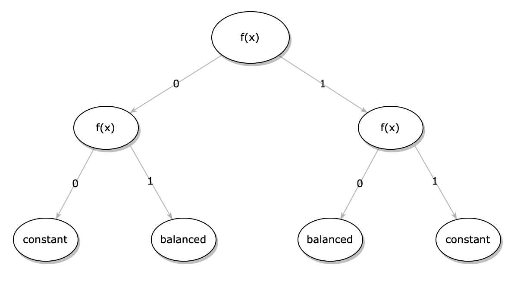

Old Man really plays dice
Introduction to Quantum Computing with Q#


Quantum Mechanics
Quantum Computing
Theory
Z basis

X basis

Classical circuits
Logic in classical computation models is expressed by logic
gates (e.g. NOT, OR, XOR, AND) composed into circuits.

Q# and QDK


Getting started with the QDK
> dotnet new console -lang Q#
The template "Console Application" was created successfully.
> dotnet run
Hello quantum world!
Simple Q# program
@EntryPoint()
operation Start() : Unit {
use qubit = Qubit();
H(qubit);
let result = MResetZ(qubit) == One ? 1 | 0;
Message($"Measured: {IntAsString(result)}");
}
Q# Entanglement
operation EntanglementExample() : Unit {
use (control, target) = (Qubit(), Qubit());
H(control);
CNOT(control, target);
let resultControl = ResultAsBool(MResetZ(control)) ? "1" | "0";
let resultTarget = ResultAsBool(MResetZ(target)) ? "1" | "0";
Message("Result: |{resultControl}{resultTarget}">");
}
Deutsch's problem
Given an unknown (blackbox) function that takes a single bit as an input, and produces a single bit as an ouput $f : \{0,1\} \rightarrow \{0,1\}$, determine if the function is constant or balanced.
Deutsch's problem - functions
- $f_0$ is constant $0$
- $f_1$ is constant $1$
- $f_2$ is "balanced same"
- $f_3$ is "balanced flipped"
- $f(0) = f(1) = 0$
- $f(0) = f(1) = 1$
- $f(0) = 0, f(1) = 1$
- $f(0) = 1, f(1) = 0$
